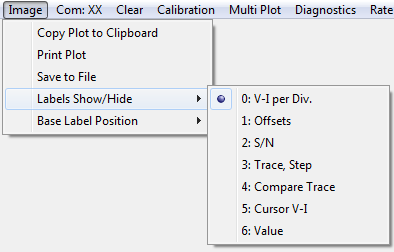

Copy Plot to Clipboard: Places a bit mapped image copy of the trace plot into the clipboard. The image can be pasted into other applications.
Print Plot: Brings up the printer dialog and prints the trace plot to the selected printer.
Save to File: Brings up the save file dialog and saves the trace plot as a bit mapped image.
Lables Show/Hide: Turns on or off display of information text that is shown at the top of the trace plot.
- Volts and Current per Division
- Volts and Current display offset divisions from the center
- Device Serial Number
- Trace number and sweep step for the current part
- Trace number and sweep step for the comparison part
- The Voltage and Current at the cursor position
- The Value of the selected parameter
Base Label Position: Base
Voltage or Base Current Steps are placed next the the sample position
selected. Depending on the acquisition mode, the position can be
adjusted to reduce clutter from overlapping text. Select the value that
give the best display.